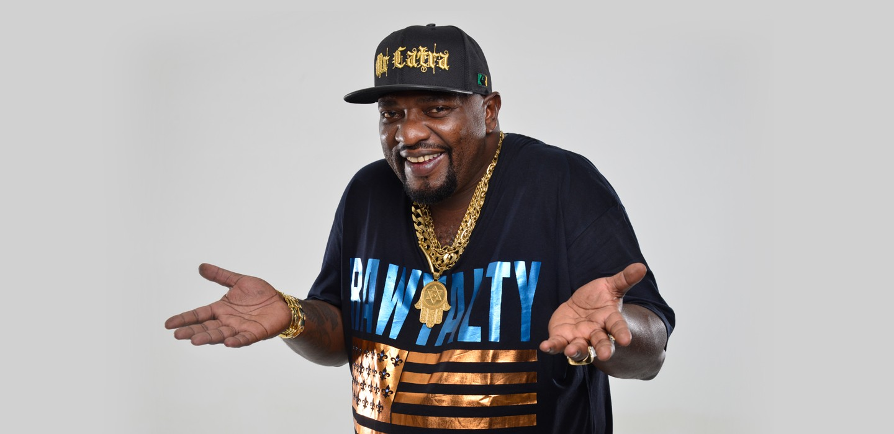
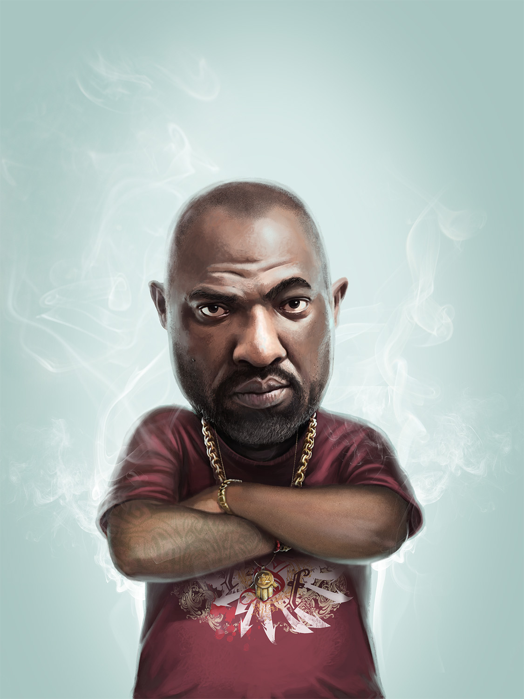

voltar
mr catra

Wagner Domingues Costa
Nascimento: 5 de novembro de 1968 — 9 de setembro de 2018
Filho(a)(s): 32
idade:49 anos
sua historia e feitos:
Em meados da década de 1980, como guitarrista, montou uma banda de rock denominada O Beco, que chegou a fazer um relativo sucesso em festas particulares, escolas e faculdades.
Na década de 1990, em parceria com o ex-VJ da MTV, o paulista Primo Preto (que havia lhe conseguido um contrato com a Zâmbia Records, gravadora independente de São Paulo, responsável pelos primeiros discos dos Racionais MC's), criou a empresa Rapsoulfunk, como gravadora, grife de moda e organizadora de bailes funk e shows de hip hop no Rio de Janeiro e em São Paulo.
Em 1994, lançou seu primeiro disco "O Bonde dos Justos", emplacando o hit "Vida na cadeia". As canções de temas fortes chamaram a atenção da Warner Music que lançou, em 1999, o CD "O fiel".
Em 2001, juntamente com MV Bill, lançou o Partido Popular Poder para a Maioria (PPPomar), o qual abandonou no ano de 2002 por divergências com Celso Athayde, proprietário da Produtora Hutus e empresário de MV Bill e dos Racionais MC's. Ainda em 2002 foi indiciado por apologia ao crime, devido às letras de suas músicas, principalmente a da composição "Cachorro", um de seus maiores sucessos, que versa sobre policiais corruptos. Sobre o assunto ele esclareceu posteriormente em entrevista: "Não sou cúmplice do crime, sou cúmplice da favela. Não estou fazendo apologia ao crime, estou é relatando uma realidade."[carece de fontes]
Em 2004, a Rapsoulfunk foi responsável pela contratação de artistas do universo hip hop para o "Festival Hip Hop Manifesta", o principal da América do Sul. O evento aconteceu no Riocentro e entre os nomes internacionais contratados destacaram-se os rappers estadunidenses Snoop Dogg e Ja Rule.
Suas composições estão incluídas na série de CDs piratas "Proibidão do rap", ao lado de músicas que enaltecem o Comando Vermelho, uma das facções criminosas do Rio de Janeiro. Sobre essas gravações, certa vez declarou em entrevista ao Jornal do Brasil: "Aquilo não era nem pra ser gravado e comercializado. Simplesmente vamos aos bailes, às rádios e cantamos com a rapaziada." [carece de fontes]
Em meados da década de 2000, começou a obter notoriedade nacional com seus funks paródicos. Como "Adultério", paródia do hit dos anos 80 "Tédio", da banda Biquini Cavadão. A música entrou em diversas coletâneas de funk e tocou em rádios do Rio de Janeiro. Catra então passou a adotar um discurso mais apelativo para o lado sexual em suas letras de forma humorosa e explícita.
Em, 2009 Catra fez uma participação na música "Mansão Thug Stronda" do Bonde da Stronda, em 2010 na música A gente faz a festa, do grupo Exaltasamba e em 2012 na canção "Mama", de Valesca Popozuda.[4] Em Janeiro de 2015, anunciou o projeto de uma banda rock pesado intitulada Mr. Catra e os Templários.[5]
Em 2012, gravou junto com Neymar e Alexandre Pires o clipe da música "Kong".
Em 2017, por conta de sua figura emblemática - ligada simbolicamente ao sexo - foi convidado e topou entregar um troféu no 4º Prêmio Sexy Hot, considerado o "Oscar da Indústria Pornô Brasileira"[6].
